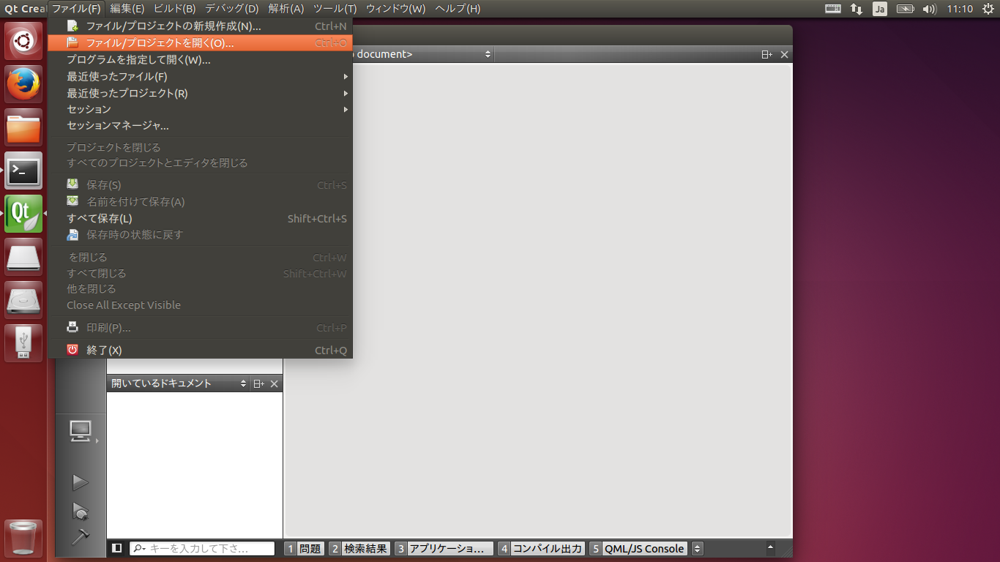
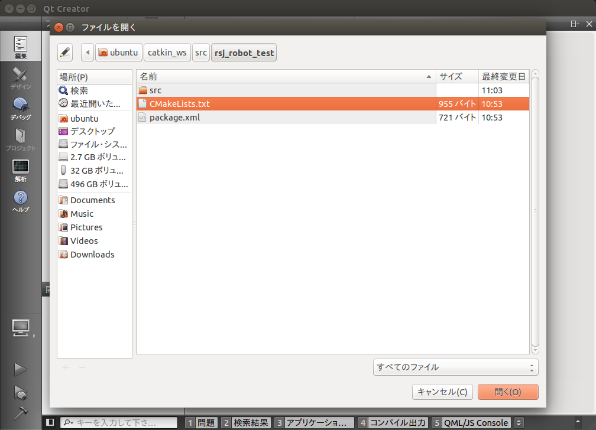
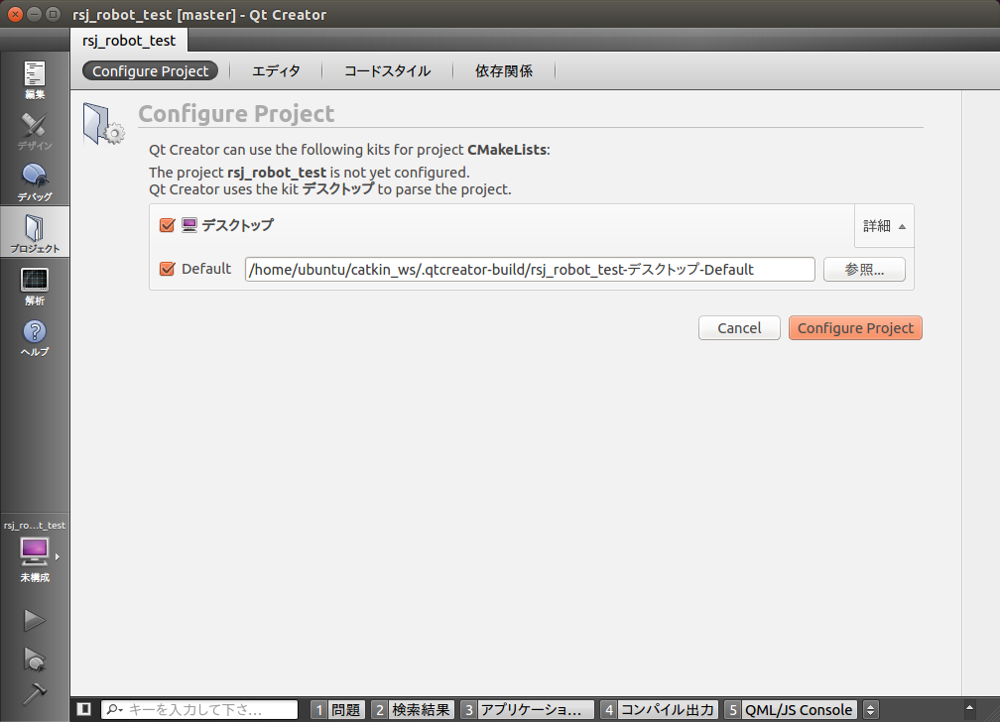
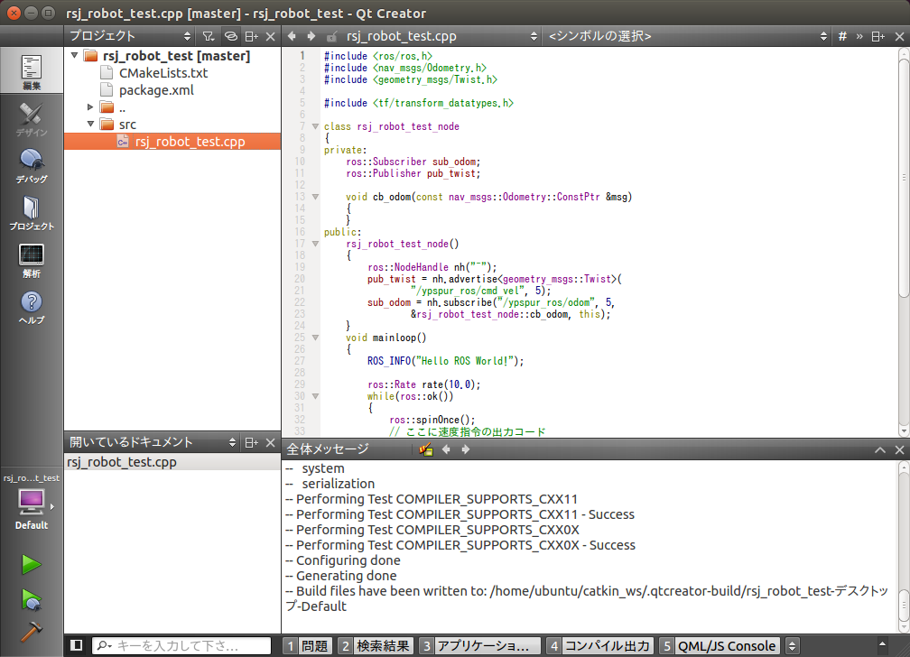

端末を開き、ひな形をダウンロードします。
$ cd ~/catkin_ws/src/
$ git clone https://github.com/at-wat/rsj_robot_test.git
統合開発環境
QtCreator (統合開発環境)を使って、rsj_robot_testプロジェクトのソースコードを開きます。まず、画面左のランチャーにある、Qtと書かれたアイコンをクリックします。
画面上のメニューバー(カーソルを重ねるとメニューが表示される)から、「ファイル」「プロジェクトを開く」を選択します。

ubuntu/catkin_ws/src/rsj_robot_test内にある、CMakeLists.txtを開きます。

Configure Projectボタンをクリックします。

少し待つと、左側のプロジェクト欄にファイルツリーが表示されます。この中から、srcディレクトリの、rsj_robot_test.cppを開きます。

基本的なコードを読み解く
このコードが実行されたときの流れを確認しましょう。
まず、先頭部分では、必要なヘッダファイルをインクルードしています。
続いて、rsj_robot_test_nodeクラスを定義します。ROSプログラミングの際には、基本的にノードの持つ機能を、クラスとして定義し、これを呼び出す形式を取ることが標準的です。(クラスを使用せずに書く事も可能ですが、気をつけなければならない点が多くなるため、本セミナーではクラスでの書き方のみを解説します。)
class rsj_robot_test_node
{
public:
void mainloop()
{
ROS_INFO("Hello ROS World!");
ros::Rate rate(10.0);
while(ros::ok())
{
ros::spinOnce();
// ここに速度指令の出力コード
rate.sleep();
}
// ここに終了処理のコード
}
};
rsj_robot_test_nodeクラスのメンバ関数であるmainloop関数の中では、ROSで情報を画面などに出力する際に用いる、ROS_INFO関数を呼び出して、"Hello ROS World!"と表示しています。ほかにも、ROS_DEBUG、ROS_WARN、ROS_ERROR、ROS_FATAL関数が用意されています。
ros::Rate rate(10.0)で、周期実行のためのクラスを初期化しています。初期化時の引数で実行周波数(この例では10Hz)を指定します。
while(ros::ok())で、メインの無限ループを回します。ros::ok()をwhileの条件にすることで、ノードの終了指示が与えられたとき(Ctrl+Cが押された場合も含む)には、ループを抜けて終了処理などが行えるようになっています。
ループ中では、まず、ros::spinOnce()を呼び出して、ROSのメッセージを受け取るといった処理を行います。spinOnceは、その時点で届いているメッセージの受け取り処理を済ませた後、すぐに処理を返します。rate.sleep()は、先ほど初期化した実行周波数を維持するようにsleepします。
なお、ここでは、クラスを定義しただけなので、中身が呼び出されることはありません。後ほど実体化されたときに、初めて中身が実行されます。
続いて、C++のmain関数が定義されています。ノードの実行時には、ここから処理がスタートします。
int main(int argc, char *argv[])
{
ros::init(argc, argv, "rsj_robot_test_node");
rsj_robot_test_node robot_test;
robot_test.mainloop();
}
はじめに、ros::init関数を呼び出して、ROSノードの初期化を行います。1、2番目の引数には、main関数の引数をそのまま渡し、3番目の引数には、このノードの名前(この例では"rsj_robot_test_node")を与えます。
次に、rsj_robot_test_nodeクラスの実体を作成します。ここでは、robot_testと名前をつけています。
最後に、実体化したrobot_testのメンバ関数、mainloopを呼び出します。mainloop関数の中は無限ループになっているため、終了するまでの間、ros::spinOnce()、rate.sleep()が呼び出され続けます。
つまり、rsj_robot_testは特に仕事をせず、"Hello ROS World!"と画面に表示します。
ビルド＆実行
ROS上でこのパッケージをビルドするためには、catkin_makeコマンドを用います。
$ cd ~/catkin_ws/
$ catkin_make
実行してみましょう。実行の際、ROSを通してノード同士がデータをやりとりするために用いる、「roscore」を起動しておく必要があります。2つの端末を開き、それぞれで以下を実行して下さい。
$ rosrun rsj_robot_test rsj_robot_test_node
[ INFO] [1466002781.136800000]: Hello ROS World!
「Hello ROS World!」と表示されれば成功です。以上の手順で、ROSパッケージに含まれるノードのソースコードを編集し、ビルドして、実行できるようになりました。